★
A/B 問題（★問題）
Q.560〜Q.573
Q.560(120F-41)★正答率 89%
免疫抑制状態（腎移植後）の悪心・頭部病変。診断はどれか。
ａ 膠芽腫
ｂ 脳膿瘍
ｃ 悪性リンパ腫
ｄ 多発性硬化症
ｅ 転移性脳腫瘍
✅
ｃ 悪性リンパ腫
免疫抑制患者（臓器移植後・HIV等）に多い→PCNSL（B細胞性リンパ腫）
📝 メモ
🧠 PCNSL（中枢神経原発悪性リンパ腫）
PCNSL：免疫正常者でも起こるが免疫抑制状態（臓器移植・HIV）でリスク大。CT/MRI：深部白質・脳室周囲の均一な造影増強病変。ステロイドで一時的に縮小（診断前のステロイドは生検に支障）。治療：大量メトトレキサート療法（MTX）。🎯 国試ポイント
PCNSL＝免疫抑制＋深部白質の均一造影増強＋大量MTX療法。ステロイドで縮小するが根治的ではない。Q.561(119F-11)★正答率 91%
転移性脳腫瘍（原発巣コントロール良好）。定位放射線照射が適切なのはどれか。
ａ 髄膜播種を伴う病変
ｂ 脳ヘルニアを伴う病変
ｃ 多数の病変（15 個以上）
ｄ 薬物療法に高感受性の病変
ｅ 小さい病変（最大径3cm 以下）
✅
ｅ 小さい病変（最大径3cm 以下）
定位放射線治療（SRS）の適応：病変数が少なく（1〜4個）・小さい（3cm以下）・脳ヘルニアなし
📝 メモ
🧠 転移性脳腫瘍の治療選択
定位放射線治療（SRS/SBRT）の適応：・病変数が少ない（通常1〜4個）
・最大径3cm以下
・脳ヘルニアなし・全身状態良好
全脳照射（WBRT）：多発病変・髄膜播種。外科：大きい単発病変・組織診断が必要な場合。
Q.562(118A-42)★📷 画像正答率 98%
56歳女性。1か月の頭痛→全身けいれん。MRI：硬膜付着を持つ均一造影増強腫瘍（脳実質外）。診断はどれか。
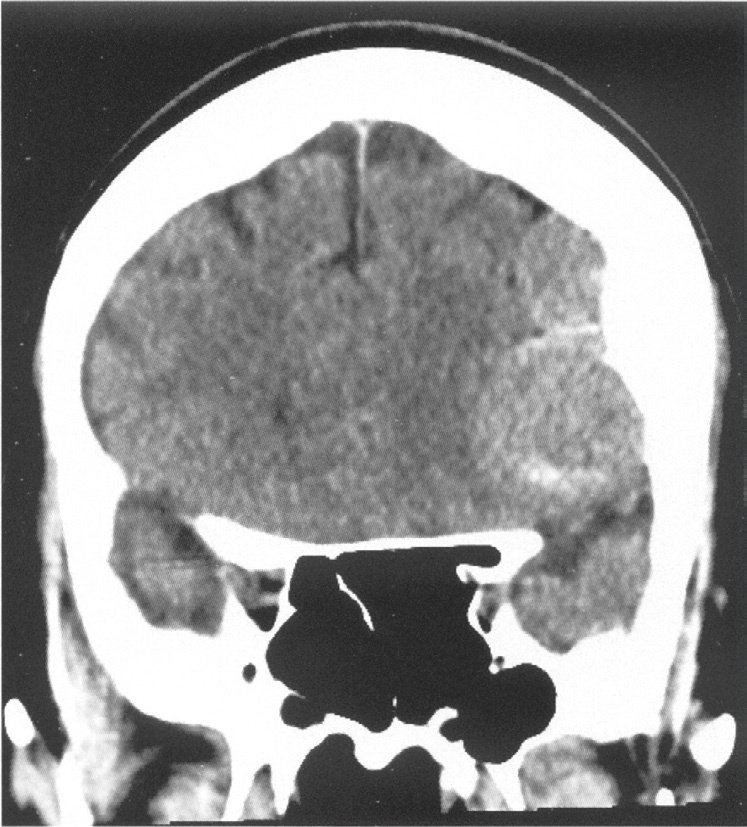
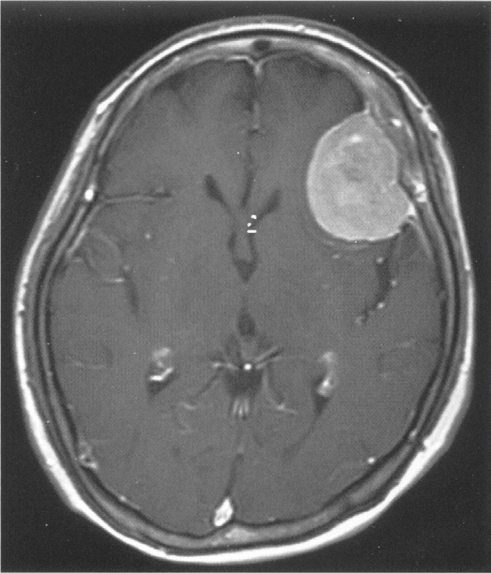
ａ 膠芽腫
ｂ 髄膜腫
ｃ 脳膿瘍
ｄ 神経鞘腫
ｅ 転移性脳腫瘍
✅
b 髄膜腫
硬膜付着・均一造影増強・脳実質外→髄膜腫
📝 メモ
🧠 髄膜腫
髄膜腫：硬膜由来の良性腫瘍（多く）。MRI：均一な強い造影増強＋dural tail（硬膜尾）。脳実質外。成人女性に多い。緩徐進行。治療：外科摘出（WHO Grade I→良性）。📋 脳腫瘍の鑑別（Q531）
| 腫瘍 | 好発 | 特徴 | 治療 |
| 膠芽腫（GBM） | 成人・大脳 | butterfly glioma・壊死・増強 | 外科＋放射線＋テモゾロミド |
| 髄芽腫 | 小児・小脳虫部 | 小脳虫部・水頭症・放射線高感受性 | 外科＋放射線（全脳脊髄） |
| 髄膜腫 | 成人女性・硬膜 | dural tail・造影増強・良性多い | 外科摘出 |
| 聴神経鞘腫 | 内耳道・橋小脳角 | 難聴・耳鳴・CN VII/VIII | 外科・ガンマナイフ |
| 転移性脳腫瘍 | 成人・大脳 | 多発ring enhancement | 全脳照射・定位放射線 |
| 頭蓋咽頭腫 | 小児・鞍上部 | 石灰化・視野障害・内分泌障害 | 外科摘出 |
Q.563(115D-12)★2択正答率 22%
PCNSLについて正しいのはどれか。2つ選べ。
ａ 若年女性に好発する。
ｂ 初発症状にぶどう膜炎がある。
ｃ 大部分はB 細胞リンパ腫である。
ｄ 診断時に約半数で全身転移を認める。
ｅ 副腎皮質ステロイドは根治的な治療薬である。
✅
ｂ 初発症状にぶどう膜炎がある。
ｃ 大部分はB 細胞リンパ腫である。
ｃ 大部分はB 細胞リンパ腫である。
PCNSL：B細胞性（ほとんど）・ぶどう膜炎（眼内リンパ腫）合併あり
📝 メモ
🧠 Q560参照
Q560参照。PCNSL：大部分（90%以上）がDLBCL（びまん性大細胞型B細胞リンパ腫）。ぶどう膜炎（眼内リンパ腫）を初発症状として呈することがある。高齢者・免疫正常者でも発症する。診断時に全身転移は稀（中枢神経限局）。ステロイドは根治的ではない（一時的縮小のみ）。Q.564(114D-43)★📷 画像正答率 96%
63歳女性。3か月で頭痛・行動異常。MRI：ring enhancement（壊死・出血）。診断はどれか。
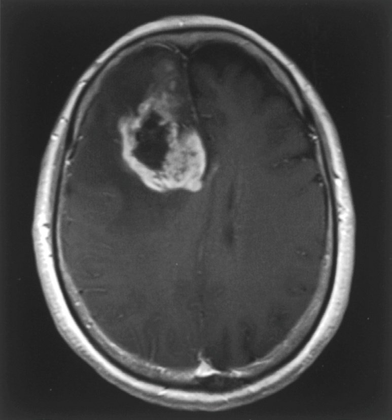
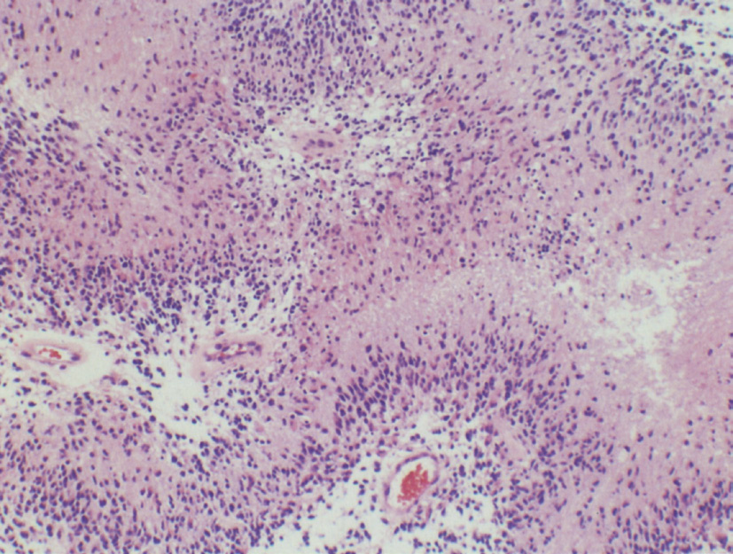
ａ 膠芽腫
ｂ 髄膜腫
ｃ 脳膿瘍
ｄ 悪性リンパ腫
ｅ 多発性硬化症
✅
ａ 膠芽腫
MRI：不均一ring enhancement＋壊死＋浮腫→膠芽腫（grade IV）
📝 メモ
🧠 膠芽腫（GBM）
膠芽腫（GBM）：最悪性の脳腫瘍（WHO grade IV）。MRI：不均一ring enhancement（壊死中心）＋広範な周囲浮腫。成人（50〜60代）・大脳白質に多い。中央生存期間：約15か月。治療：外科摘出＋放射線療法＋テモゾロミド（アルキル化薬）。Q.565(113E-37)★正答率 98%
男児。早朝の嘔吐が繰り返す（1か月）。頭蓋内圧亢進疑い。まず行う検査はどれか。
ａ 脳 波
ｂ 腰椎穿刺
ｃ 血液培養
ｄ 頭部単純CT
ｅ 腹部単純エックス線
✅
d 頭部単純CT
小児の頭蓋内圧亢進症状（朝の嘔吐）→まず頭部CT（腫瘍・水頭症の確認）
📝 メモ
🧠 脳腫瘍の初期検査
小児の朝の嘔吐・頭痛（頭蓋内圧亢進）→頭部CT（または頭部MRI）が第一選択。後頭蓋窩腫瘍（髄芽腫・上衣腫）を疑う。腰椎穿刺は頭蓋内圧亢進時は禁忌（CT先行）。Q.566(108I-77)★📷 画像2択正答率 65%
12歳男児。頭痛＋嘔吐（2か月）。MRI：小脳虫部腫瘍（均一造影増強）。この腫瘍に関して正しいのはどれか。2つ選べ。
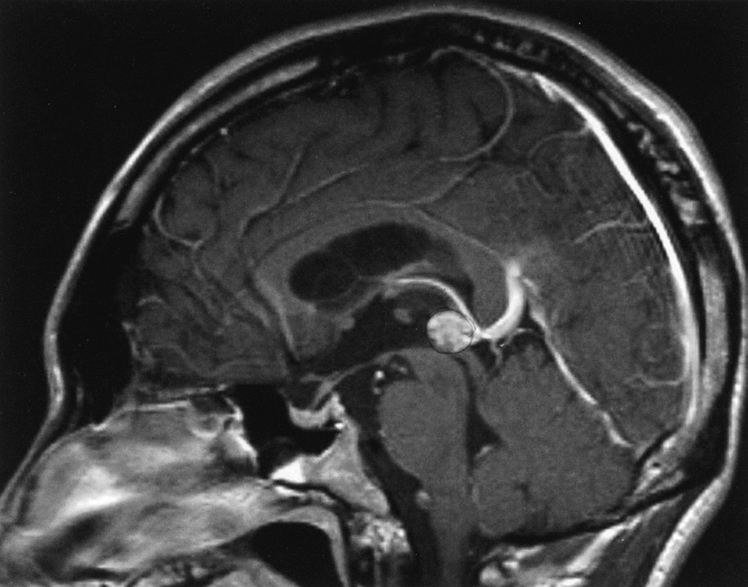
ａ 水頭症
ｂ 網膜血管腫
ｃ 両耳側半盲
ｄ 血清CEA 高値
ｅ 放射線高感受性
✅
ａ 水頭症
ｅ 放射線高感受性
ｅ 放射線高感受性
小児・小脳虫部の腫瘍→髄芽腫→水頭症（第4脳室閉塞）＋放射線高感受性
📝 メモ
🧠 髄芽腫
髄芽腫：小児に好発。小脳虫部から発生→第4脳室閉塞→水頭症（閉塞性）。特徴：放射線感受性が高い→全脳脊髄照射が治療に必須。網膜血管腫（von Hippel-Lindau）は小脳血管芽腫で別疾患。Q.567(107I-2)★正答率 92%
小児でよくみられる脳腫瘍はどれか。
ａ 膠芽腫
ｂ 髄芽腫
ｃ 髄膜腫
ｄ 下垂体腺腫
ｅ 悪性リンパ腫
✅
b 髄芽腫
小児脳腫瘍の好発：髄芽腫・星細胞腫（後頭蓋窩）・上衣腫が多い
📝 メモ
📋 脳腫瘍の年齢別好発
| 脳腫瘍 | 好発年齢・部位 |
| 髄芽腫 | 小児・小脳虫部（第4脳室） |
| 星細胞腫（低悪性） | 小児〜若年・脳幹・小脳 |
| 膠芽腫 | 成人（50〜60代）・大脳半球 |
| 髄膜腫 | 成人（女性）・傍矢状部・蝶形骨縁 |
| 下垂体腺腫 | 成人（30〜50代）・鞍内 |
| 頭蓋咽頭腫 | 小児〜成人・鞍上部 |
Q.568(106I-7)★正答率 54%
高齢女性。MRI造影像（A）＋HE染色標本（B）。診断はどれか。
ａ 胚細胞腫
ｂ 乏突起膠腫
ｃ 神経膠芽腫
ｄ 転移性脳腫瘍
ｅ 悪性リンパ腫
✅
d 転移性脳腫瘍
MRI：多発ring enhancement＋病理：転移癌の像→転移性脳腫瘍
📝 メモ
🧠 転移性脳腫瘍
転移性脳腫瘍：成人の最多脳腫瘍（原発性脳腫瘍より多い）。肺癌（最多）・乳癌・胃癌・腎癌・悪性黒色腫。MRI：多発ring enhancement（出血・壊死）。血行性転移（大脳・灰白質・白質境界部）。Q.569(97A-44)★
男性。頭痛・易疲労・物忘れ・口渇・視力低下（2年）。内分泌障害＋視野障害。診断はどれか。
ａ 髄膜腫
ｂ 神経膠腫
ｃ 神経鞘腫
ｄ 頭蓋咽頭腫
ｅ 松果体部腫瘍
✅
d 頭蓋咽頭腫
若年〜成人・鞍上部・視野障害（両耳側半盲）・下垂体機能低下・石灰化→頭蓋咽頭腫
📝 メモ
🧠 頭蓋咽頭腫
頭蓋咽頭腫：Rathke嚢由来。鞍上部腫瘍。石灰化・嚢胞性が特徴的。症状：両耳側半盲（視交叉圧迫）・下垂体機能低下（尿崩症等）。小児と成人に2峰性。治療：外科摘出（再発しやすい）。Q.570(96A-47)★
男性。2か月で頭痛・めまい・体幹失調。14歳時に両側眼底出血既往。診断はどれか。
ａ 脳動脈瘤
ｂ 神経線維腫症
ｃ 神経皮膚黒色症
ｄ Sturge-Weber 症候群
ｅ von Hippel-Lindau 病
✅
ｅ von Hippel-Lindau 病
小脳血管芽腫＋眼底の網膜血管腫＋家族歴→VHL病（常染色体優性）
📝 メモ
🧠 von Hippel-Lindau病
VHL病：VHL遺伝子変異（常染色体優性）。小脳血管芽腫＋網膜血管腫（眼底出血）＋腎細胞癌（多発）。若年成人に多い。小脳血管芽腫：嚢胞性＋壁在結節のMRI。Q.571(95B-52)★2択
石灰化がみられるのはどれか。2つ選べ。
ａ 乏突起膠腫
ｂ 下垂体腺腫
ｃ 聴神経鞘腫
ｄ 胚芽腫
ｅ 頭蓋咽頭腫
✅
ａ 乏突起膠腫
ｅ 頭蓋咽頭腫
ｅ 頭蓋咽頭腫
脳腫瘍の石灰化：乏突起膠腫（よく石灰化）・頭蓋咽頭腫（卵殻状石灰化）
📝 メモ
📋 脳腫瘍と石灰化
| 腫瘍 | 石灰化 |
| 乏突起膠腫 | 頻度高い（特徴的） |
| 頭蓋咽頭腫 | 卵殻状石灰化（特徴的） |
| 下垂体腺腫 | まれ |
| 聴神経鞘腫 | なし |
| 胚芽腫（胚細胞腫） | まれ |
Q.572(93F-40)★📷 画像2択
男児。頻回嘔吐＋意識障害。MRI：後頭蓋窩腫瘍（第4脳室充填）。考えられる診断はどれか。2つ選べ。
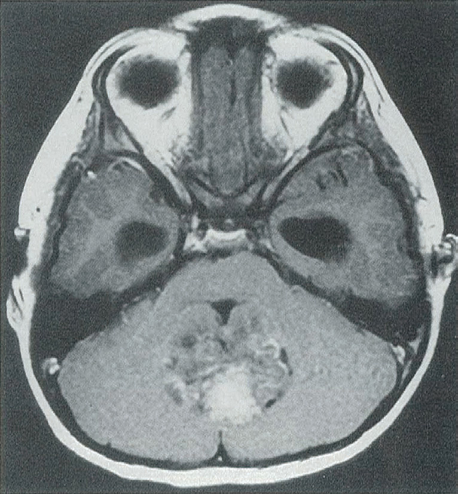
ａ 髄膜腫〈meningioma〉
ｂ 髄芽腫〈medulloblastoma〉
ｃ 上衣腫〈ependymoma〉
ｄ 稀突起膠腫〈oligodendroglioma〉
ｅ 頭蓋咽頭腫〈craniopharyngioma〉
✅
ｂ 髄芽腫〈medulloblastoma〉
ｃ 上衣腫〈ependymoma〉
ｃ 上衣腫〈ependymoma〉
小児・第4脳室・後頭蓋窩腫瘍→髄芽腫または上衣腫（どちらも第4脳室に発生）
📝 メモ
🧠 後頭蓋窩小児腫瘍
小児の後頭蓋窩腫瘍：・髄芽腫（小脳虫部・第4脳室充填）
・上衣腫（ependymoma）（第4脳室壁より発生）
・小脳星細胞腫（低悪性）
髄膜腫・乏突起膠腫は大脳の腫瘍（後頭蓋窩の小児では少ない）。
Q.573(84B-52)★
転移性脳腫瘍の原発巣として最も多いのはどれか。
ａ 乳 癌
ｂ 肺 癌
ｃ 胃 癌
ｄ 腎 癌
ｅ 悪性黒色腫
✅
b 肺 癌
転移性脳腫瘍の原発巣：肺癌（最多・約50%）→乳癌→消化器癌
📝 メモ
🧠 Q568参照
Q568参照。転移性脳腫瘍の原発巣：肺癌が最多（特に腺癌・小細胞肺癌）。次いで乳癌。無
A/B 問題（無印）
Q.574〜Q.594
Q.574(112A-30)2択正答率 86%
連問（112A-30〜40）。5歳男児。頭痛・嘔吐・歩行ふらつき（1か月）。診断に有用な検査はどれか（2択）。
ａ 脳 波
ｂ 眼底検査
ｃ 視野検査
ｄ 脳脊髄液検査
ｅ 頭部エックス線撮影
✅
b 眼底検査
小児の頭蓋内圧亢進症状→眼底検査（うっ血乳頭の確認）
📝 メモ
🧠 頭蓋内圧亢進の眼底検査
うっ血乳頭：頭蓋内圧亢進の眼底所見。小児の後頭蓋窩腫瘍疑い→眼底検査でうっ血乳頭を確認（CT・MRIの前に検眼鏡で評価可能）。腰椎穿刺は頭蓋内圧亢進時禁忌。Q.575(112A-40)📷 画像正答率 24%
連問（112A-40）。PCNSL（中枢神経原発悪性リンパ腫）の確定後。治療はどれか。
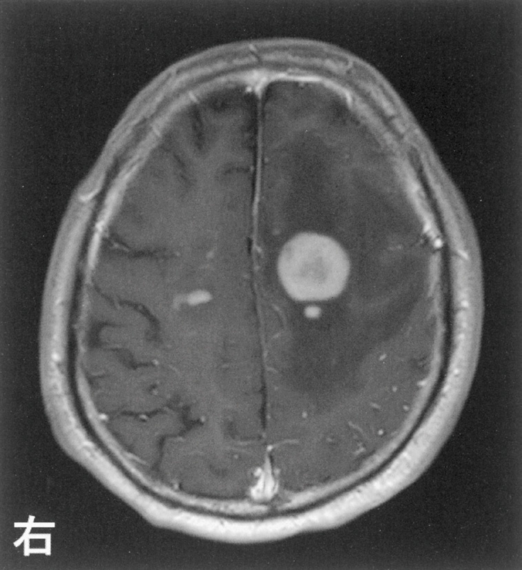
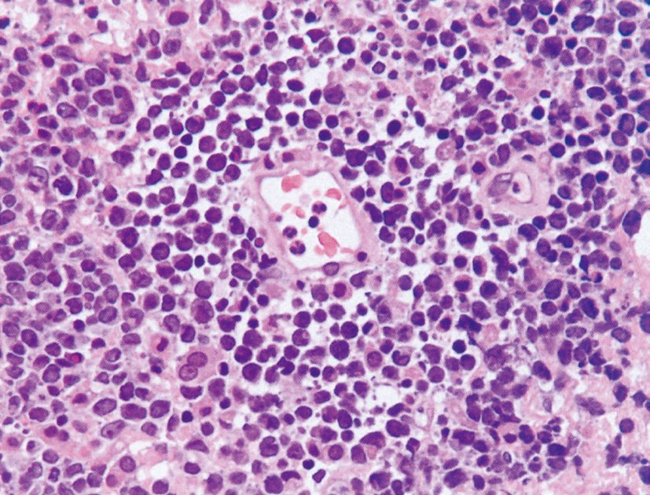

ａ 抗菌薬投与
ｂ 開頭腫瘍摘出術
ｃ アシクロビル投与
ｄ 定位的放射線治療
ｅ 大量メトトレキサート療法
✅
e 大量メトトレキサート療法
PCNSL→大量メトトレキサート（HD-MTX）療法が第一選択
📝 メモ
🧠 Q560参照
Q560参照。PCNSL→大量MTX療法（血液脳関門を越えるため高用量で使用）。放射線療法は補助的。外科的摘出は通常行わない（生検のみ）。アシクロビルは抗ウイルス薬。Q.576(109A-56)📷 画像正答率 90%
33歳女性。29歳以降無月経。プロラクチン高値（79ng/mL）。この患者に認められるのはどれか。
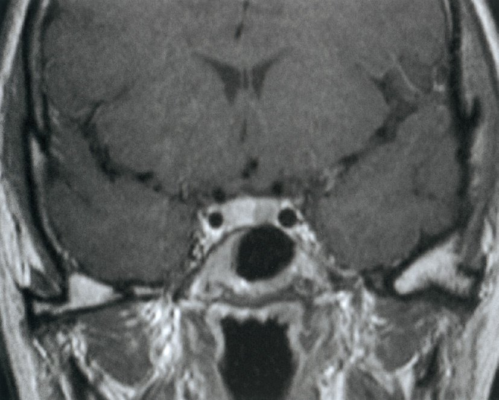
ａ 慢性甲状腺炎
ｂ 染色体異常
ｃ 視野障害
ｄ 低血糖症
ｅ 乳汁漏出
✅
e 乳汁漏出
高プロラクチン血症（プロラクチン産生下垂体腺腫）→乳汁漏出（溢乳）＋無月経
📝 メモ
🧠 プロラクチン産生下垂体腺腫
プロラクチノーマ：最多の下垂体腺腫。高プロラクチン血症→乳汁漏出（溢乳）＋無月経（性腺機能低下）。診断：血清PRL測定＋頭部MRI（鞍内腫瘤）。治療：ドパミン作動薬（ブロモクリプチン・カベルゴリン）が第一選択（外科は二次）。Q.577(109D-41)📷 画像3択正答率 61%
64歳男性。右片麻痺（6か月で進行）。MRI：左大脳腫瘍（ring enhancement）。HE染色：高悪性度所見。診断はどれか（3択）。
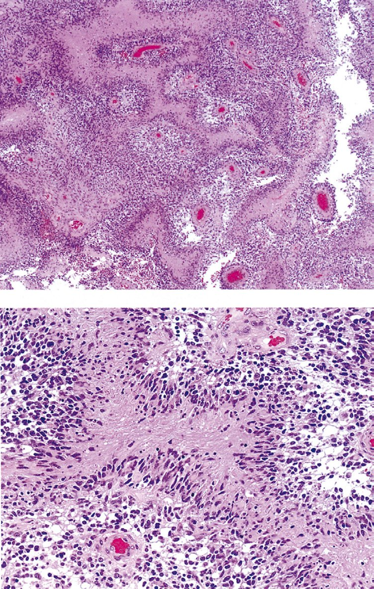

ａ 膠芽腫
ｂ 髄膜腫
ｃ 脳膿瘍
ｄ 悪性リンパ腫
ｅ 転移性脳腫瘍
✅
a 膠芽腫
ring enhancement＋高悪性度の病理所見→膠芽腫（GBM）
📝 メモ
🧠 Q564参照
Q564参照。膠芽腫（GBM）：ring enhancement＋壊死＋高悪性度。テモゾロミド＋放射線。Q.578(106G-40)📷 画像正答率 97%
70歳女性。けいれん。MRI：脳表に沿う均一造影増強腫瘍（FLAIR＋外頸動脈造影）。診断はどれか。
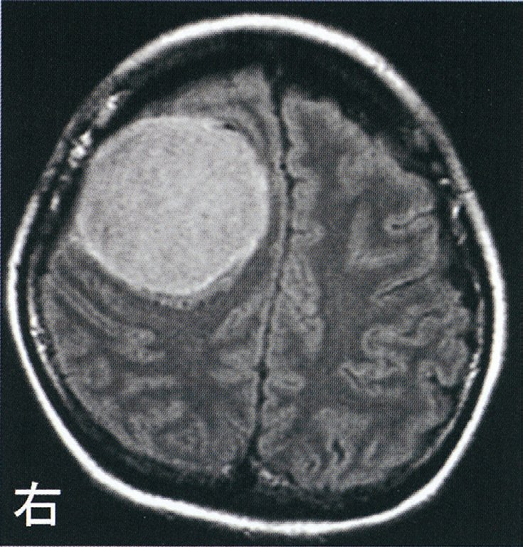
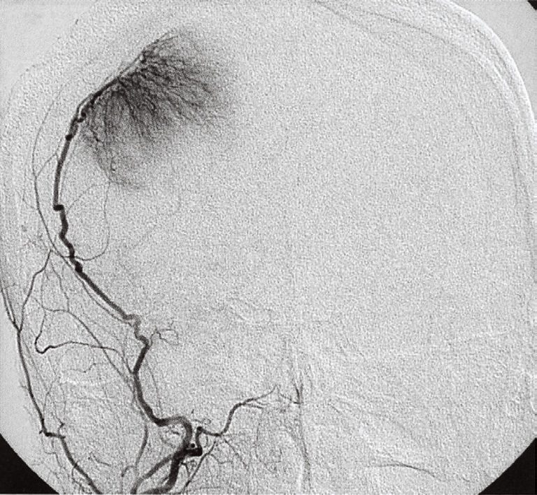
ａ 髄膜腫
ｂ 胚細胞腫
ｃ 神経膠腫
ｄ 悪性リンパ腫
ｅ 転移性脳腫瘍
✅
a 髄膜腫
脳表に沿う均一造影増強腫瘍＋外頸動脈から血流→髄膜腫
📝 メモ
🧠 Q562参照
Q562参照。髄膜腫：脳表・硬膜附着・均一造影増強・外頸動脈（硬膜動脈）から血流供給。Q.579(106I-12)正答率 93%
内耳道に限局した聴神経腫瘍による症状として考えにくいのはどれか。
ａ 耳 鳴
ｂ 難 聴
ｃ めまい
ｄ 顔面神経麻痺
ｅ 顔面の感覚低下
✅
e 顔面の感覚低下
内耳道内限局：CN VII（顔面神経）とCN VIII（前庭蝸牛）→顔面感覚（三叉神経V）は来さない
📝 メモ
🧠 聴神経腫瘍（前庭神経鞘腫）
聴神経腫瘍（前庭神経鞘腫）：内耳道→橋小脳角に発生。症状：難聴・耳鳴・めまい（CN VIII障害）＋顔面神経麻痺（CN VII障害）。
顔面の感覚低下：三叉神経（CN V）の障害→内耳道限局では来しにくい（橋小脳角腫瘍が大きくなれば来す）。
Q.580(105A-57)📷 画像3択正答率 90%
60歳女性。右耳の耳鳴・難聴。MRI：右橋小脳角腫瘍。この患者にみられるのはどれか。3つ選べ。
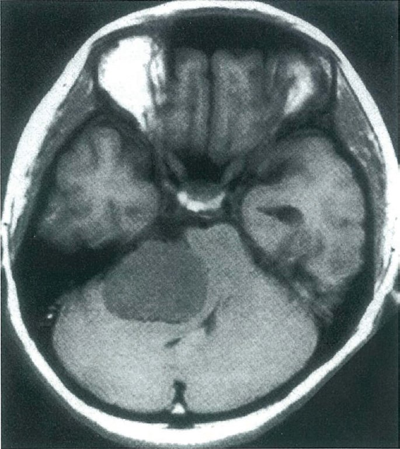
ａ 歩行時によろめく。
ｂ 右側の同名半盲を訴える。
ｃ 右側の嗅覚が低下している。
ｄ 右側の顔面神経麻痺がみられる。
ｅ 右側を注視すると大きな振幅の眼振がみられる。
✅
ａ 歩行時によろめく。
ｄ 右側の顔面神経麻痺がみられる。
ｅ 右側を注視すると大きな振幅の眼振がみられる。
ｄ 右側の顔面神経麻痺がみられる。
ｅ 右側を注視すると大きな振幅の眼振がみられる。
聴神経腫瘍（右）：同側小脳失調（よろめく）＋CN VII麻痺（右顔面）＋眼振（前庭神経障害）
📝 メモ
🧠 Q579参照
Q579と同テーマ（大きな腫瘍）。右聴神経腫瘍の大きいもの：同側小脳失調（よろめく）・同側顔面神経麻痺・眼振（前庭障害）。同名半盲・嗅覚は前頭葉・後頭葉障害（関係なし）。Q.581(105D-30)📷 画像正答率 70%
20歳男性。頭痛＋歩行ふらつき。母と叔父が脳腫瘍手術。MRI：小脳嚢胞性腫瘍（壁在結節）。診断はどれか。
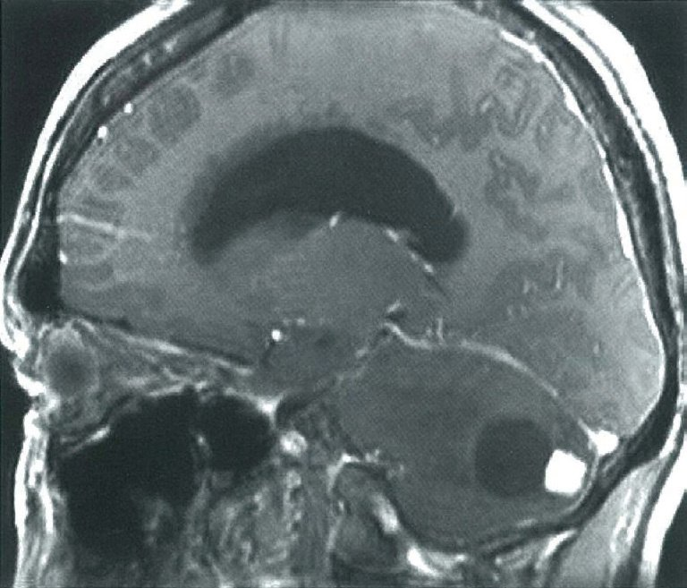
ａ Chiari 奇形
ｂ 結節性硬化症
ｃ 神経線維腫症1 型
ｄ Sturge-Weber 症候群
ｅ von Hippel-Lindau 病
✅
ｅ von Hippel-Lindau 病
Q570参照。家族性・小脳血管芽腫（嚢胞性＋壁在結節）→VHL病
📝 メモ
🧠 Q570参照
Q570参照。VHL病：常染色体優性、家族歴あり。小脳血管芽腫（嚢胞＋壁在結節）が特徴的。Q.582(105F-24)📷 画像正答率 80%
70歳女性。左下肢から全身へのけいれん（Jacksonian march）後に意識消失。けいれん時にみられる可能性が高いのはどれか。
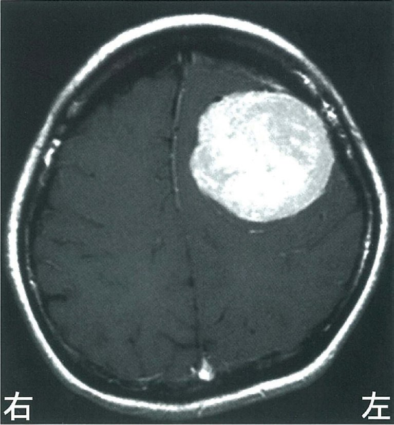
ａ 散 瞳
ｂ 眼瞼下垂
ｃ 共同偏視
ｄ 水平眼振
ｅ 輻湊障害
✅
c 共同偏視
左下肢から始まる焦点てんかん→右前頭葉（運動野）が焦点→右共同偏視（焦点側）
📝 メモ
🧠 Q526参照
Q526参照。けいれん時の共同偏視は発作焦点側に向く（右前頭葉→右共同偏視）。左下肢から始まる（右半球焦点）→右共同偏視。Q.583(104A-40)📷 画像正答率 97%
39歳男性。意識低下（JCS II-30）。右瞳孔散大（動眼神経麻痺）。脳圧亢進。使用する薬剤はどれか。
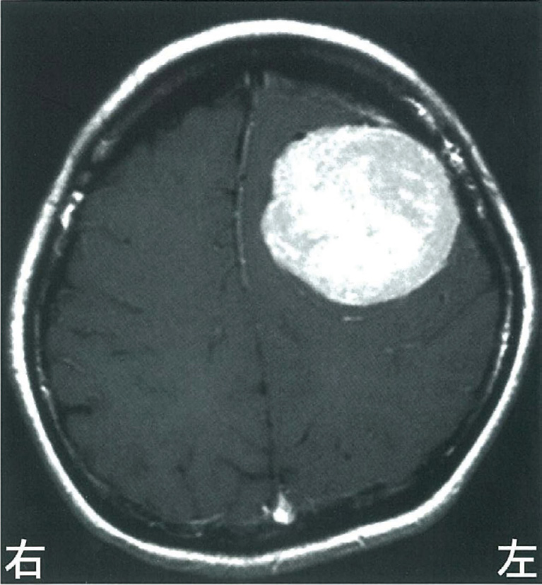
ａ サクシニルコリン
ｂ ニトログリセリン
ｃ グリセロール
ｄ ジアゼパム
ｅ アトロピン
✅
ｃ グリセロール
脳圧亢進（脳腫瘍による）→浸透圧利尿薬（グリセロール）で脳浮腫軽減
📝 メモ
🧠 脳圧亢進の急性管理
脳圧亢進の内科的治療：①浸透圧利尿薬（グリセロール・マンニトール）→脳浮腫軽減
②頭部挙上（30°）
③高換気（CO₂↓→脳血管収縮→脳圧↓）
④ステロイド（デキサメタゾン）→腫瘍周囲浮腫に有効
ジアゼパム：けいれん。アトロピン：徐脈。
Q.584(104I-57)📷 画像2択正答率 88%
7歳男児。歩行時転倒（2週）。MRI（矢状断＋横断）：橋・中脳腫瘍（浸潤性）。神経診察でみられるのはどれか。2つ選べ。
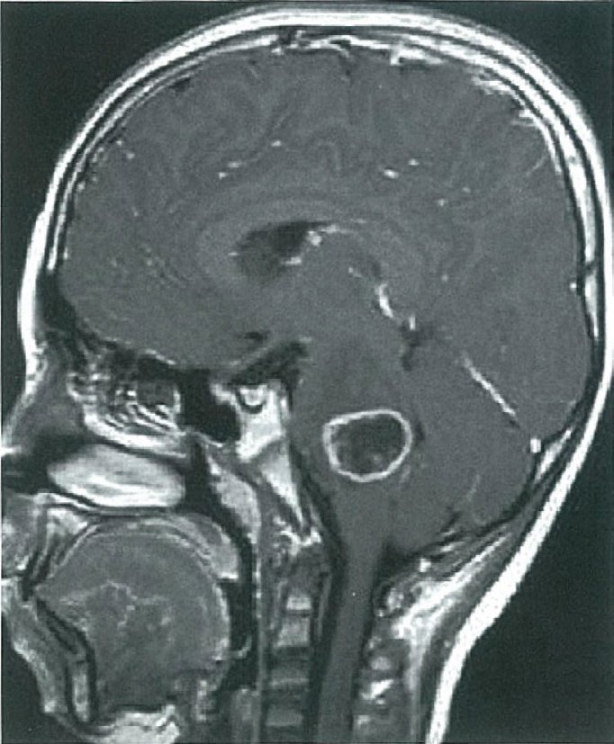
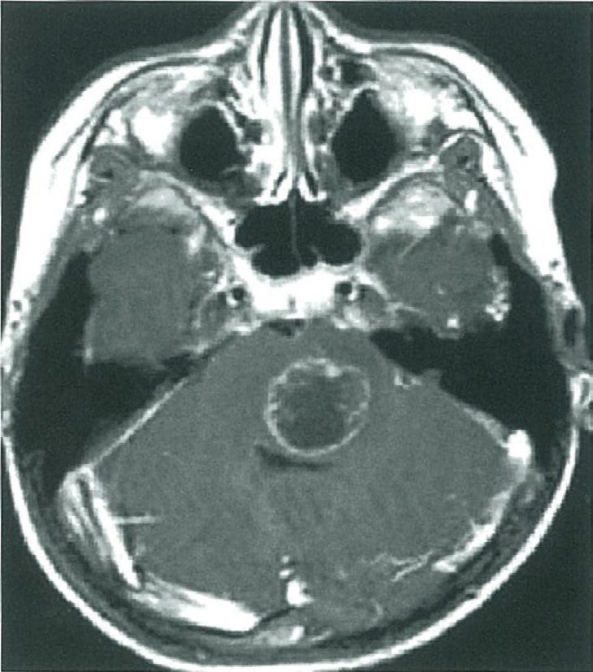
ａ 失 行
ｂ 視野障害
ｃ 感覚性失語
ｄ 眼球運動障害
ｅ 顔面神経麻痺
✅
ｄ 眼球運動障害
ｅ 顔面神経麻痺
ｅ 顔面神経麻痺
橋・中脳腫瘍→脳幹の脳神経核（CN VI・VII・CN III・IV）障害
📝 メモ
🧠 脳幹腫瘍
脳幹（橋・中脳）腫瘍：脳神経核への浸潤→眼球運動障害（CN III・IV・VI）＋顔面神経麻痺（CN VII）。失語は大脳皮質（言語野）。視野障害は後頭葉。失行は頭頂葉。Q.585(103A-28)📷 画像正答率 95%
19歳女性。視力低下（6か月）＋易疲労感。MRI：鞍上部腫瘍（石灰化あり）。この腫瘍でみられる症状はどれか。
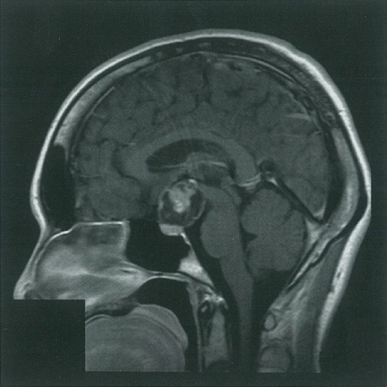
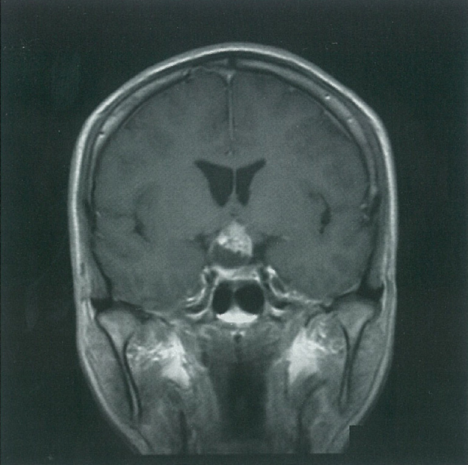
ａ 外眼筋麻痺
ｂ 味覚障害
ｃ 片麻痺
ｄ 尿崩症
ｅ 難 聴
✅
d 尿崩症
鞍上部腫瘍（頭蓋咽頭腫）→下垂体前葉・後葉障害→尿崩症（ADH欠乏）
📝 メモ
🧠 Q569参照
Q569参照。頭蓋咽頭腫：鞍上部腫瘍→視野障害（視交叉圧迫）＋尿崩症（神経下垂体障害）＋下垂体前葉機能低下。尿崩症は視力低下より先に起こることも。Q.586(103D-34)📷 画像正答率 97%
45歳男性。昨夜のけいれん。神経学的異常なし。MRI：脳表の均一造影増強腫瘍（矢状断・冠状断）。診断はどれか。
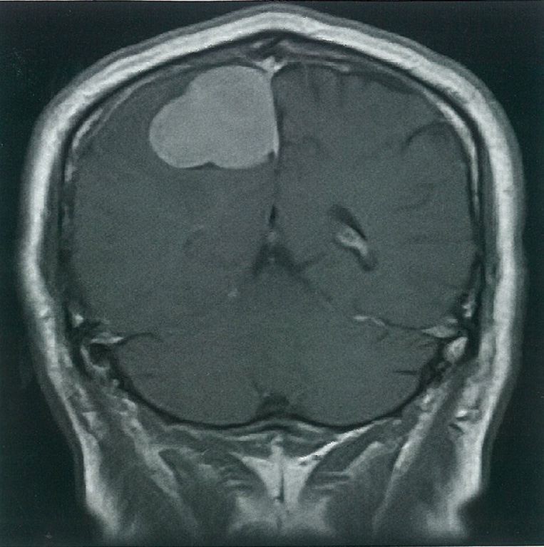
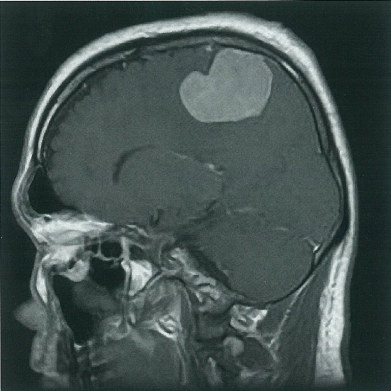
ａ 髄膜腫
ｂ 髄芽腫
ｃ 胚細胞腫
ｄ 神経膠腫
ｅ 転移性脳腫瘍
✅
a 髄膜腫
Q562参照。脳表付着の均一造影増強腫瘍→髄膜腫
📝 メモ
🧠 Q562参照
Q562参照。髄膜腫：均一造影増強・脳表・dural tail。Q.587(101B-112)正答率 82%
血管に富む髄膜腫の摘出手術前に行われるのはどれか。
ａ 全脳照射
ｂ 動脈塞栓術
ｃ 抗腫瘍薬動注療法
ｄ 脳室ドレナージ
ｅ 内視鏡下生検
✅
b 動脈塞栓術
血管豊富な髄膜腫の術前塞栓→外頸動脈系の腫瘍栄養血管を術前塞栓→術中出血軽減
📝 メモ
🧠 術前塞栓術
術前塞栓術（embolization）：血管の多い髄膜腫・傍矢状部髄膜腫等で術前に腫瘍栄養血管を塞栓→術中出血量減少。全脳照射は悪性腫瘍用。抗腫瘍薬動注は化学療法（髄膜腫は通常行わない）。Q.588(101D-45)正答率 93%
連問（101D-45〜46）。MRI所見→病変はどこか。
ａ 大 脳
ｂ 小 脳
ｃ 脳 幹
ｄ 下垂体
ｅ 松果体
✅
b 小 脳
連問の画像から小脳腫瘍を同定
📝 メモ
🧠 小脳腫瘍
小脳腫瘍：失調・めまい・嘔吐・頭蓋内圧亢進（水頭症）。小脳虫部→体幹失調。小脳半球→同側上下肢失調。Q.589(101D-46)正答率 98%
連問（101D-46）。最も考えられるのはどれか。
ａ 脳 炎
ｂ 脳腫瘍
ｃ 脳梗塞
ｄ 脳出血
ｅ 硬膜下血腫
✅
b 脳腫瘍
小脳腫瘍（小児）→髄芽腫または星細胞腫
📝 メモ
🧠 小脳腫瘍の鑑別（Q566・Q572参照）
Q566・Q572参照。小児・小脳腫瘍→髄芽腫・上衣腫・毛様細胞性星細胞腫が多い。Q.590(101F-54)正答率 91%
MRI T1強調①〜⑤。聴力障害を主訴とするのはどれか。
ａ ①
ｂ ②
ｃ ③
ｄ ④
ｅ ⑤
✅
ａ ①
聴力障害→聴神経腫瘍（前庭神経鞘腫）→内耳道拡大のMRI像を選ぶ
📝 メモ
🧠 Q579・Q580参照
Q579参照。聴神経腫瘍：内耳道拡大＋橋小脳角の造影増強腫瘍。MRI①が内耳道拡大の所見を示すものを選ぶ。Q.591(100B-51)
小児に好発する脳腫瘍はどれか。
ａ 神経膠芽腫
ｂ 髄芽腫
ｃ 下垂体腺腫
ｄ 髄膜腫
ｅ 頭蓋咽頭腫
✅
b 髄芽腫
Q567参照。小児脳腫瘍→髄芽腫（小脳虫部）
📝 メモ
🧠 Q567参照
Q567と同テーマ。Q.592(99A-44)📷 画像
59歳男性。頭痛・吐き気（1か月）。MRI：多発ring enhancement（2病変）。診断はどれか。
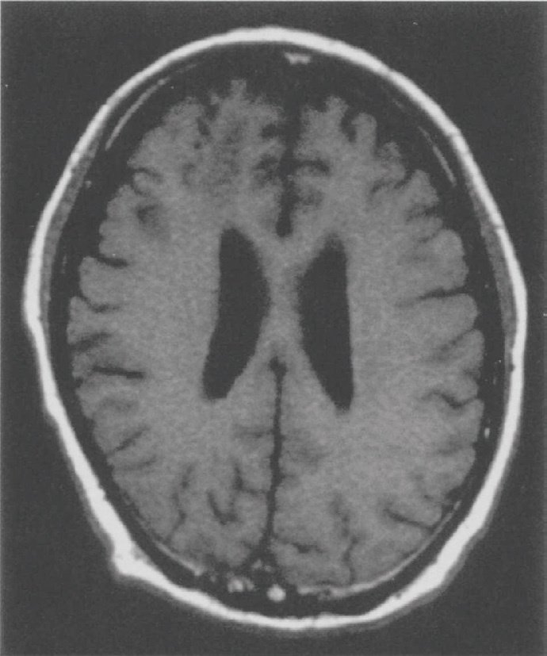
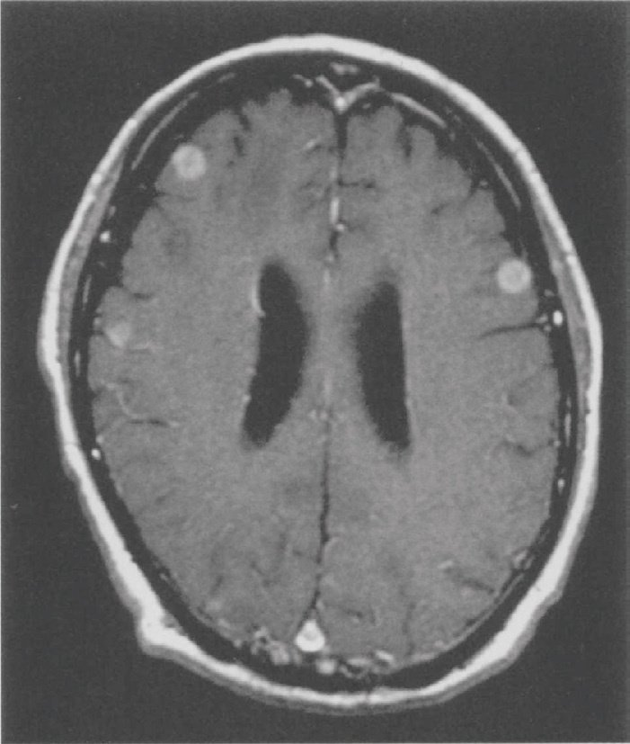
ａ 髄膜腫
ｂ 神経膠腫
ｃ 神経鞘腫
ｄ 髄膜癌腫症
ｅ 転移性脳腫瘍
✅
e 転移性脳腫瘍
Q568参照。多発ring enhancement→転移性脳腫瘍（肺癌等）
📝 メモ
🧠 Q568参照
Q568参照。多発ring enhancement→転移性脳腫瘍。Q.593(98D-43)
26歳男性。視力低下。MRI：鞍上部〜松果体部腫瘍。考えにくいのはどれか。
ａ 髄膜腫
ｂ 神経膠腫
ｃ 下垂体腺腫
ｄ 頭蓋咽頭腫
ｅ 松果体部腫瘍
✅
e 松果体部腫瘍
本問の腫瘍は鞍上部に存在するが松果体部腫瘍は後部（テント切痕後方）→別部位
📝 メモ
🧠 鞍上部腫瘍の鑑別
鞍上部腫瘍：頭蓋咽頭腫・胚細胞腫・髄膜腫・下垂体腺腫（鞍内から進展）。松果体部腫瘍（胚細胞腫・松果体細胞腫）は後頭蓋窩・テント切痕部→鞍上部ではない。Q.594(98F-9)
6歳男児。歩行ふらつき（1か月）→噴出性嘔吐（2週）。視神経乳頭の発赤・腫脹。まず行う検査はどれか。
ａ 血糖測定
ｂ 頭部エックス線単純撮影
ｃ 頭部単純MRI
ｄ 脳 波
ｅ 腰椎穿刺
✅
c 頭部単純MRI
小児・後頭蓋窩腫瘍疑い（頭蓋内圧亢進＋小脳失調）→MRI（CTより優れる）
📝 メモ